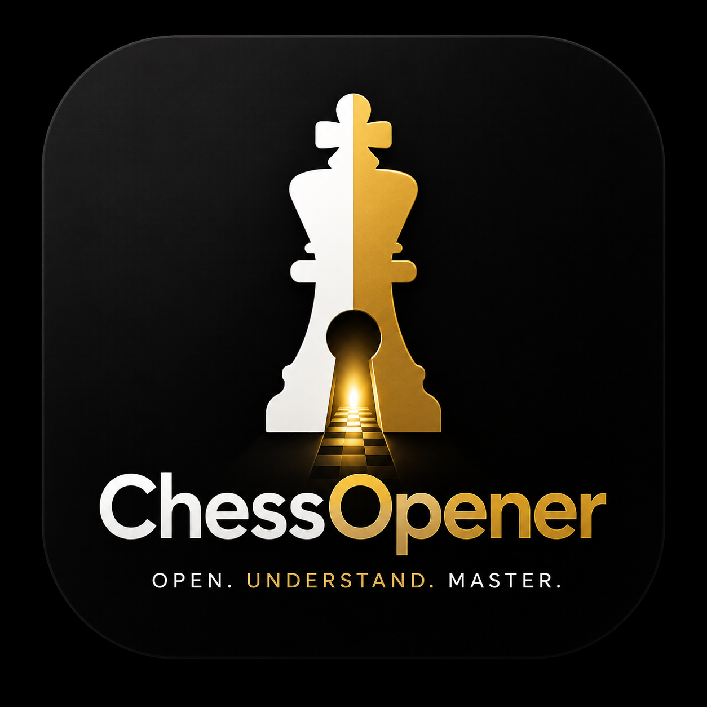

© 2026 William CHAUVET — ChessOpener
Open,
Understand,
Master.
Learn
Practice
Select an opening to see its profile
Complexity
Sharpness
Practice
this variation
Back
Next
The idea
→ What's coming
Did you know?
⇄
Practice as defender
♟
Your turn to play
Select an opening to see its profile
Complexity
Sharpness
Practice
this variation
Hint ?
Tap a piece to select it, then tap its destination
Your turn to play
✗ Wrong
Back
Forward
✓
Perfect!
Next variation →
Try again
ChessOpener
Understand and practice chess openings
01
Learn
— step through each move with a plain-English explanation.
02
Practice
— play the first ~10 moves of each variation yourself. The app checks you instantly.
No notation. No jargon. Just chess.
Let's start
Add ChessOpener to your home screen for the best experience
Install
×
Magnus
Chess Expert
✕
Hello! Ask me anything about chess. 🏆